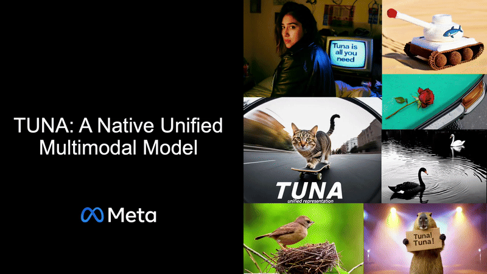
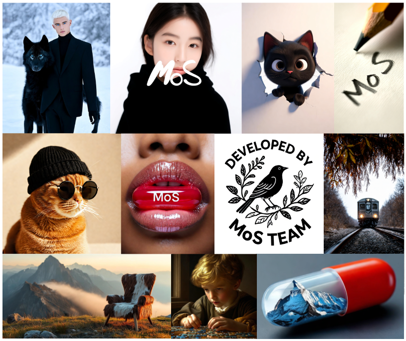
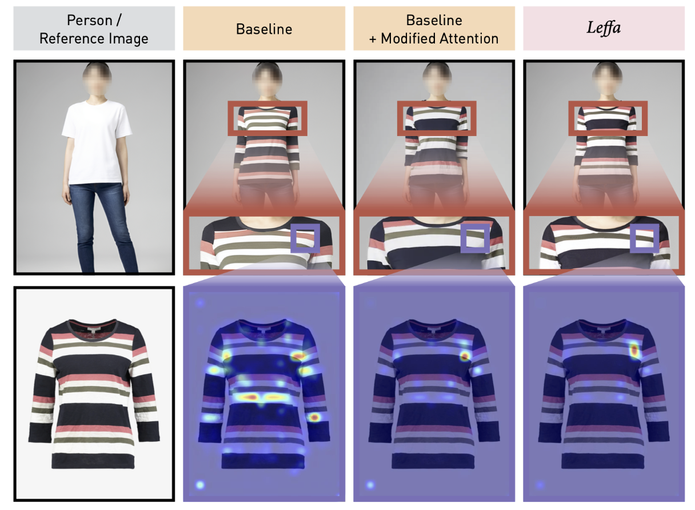
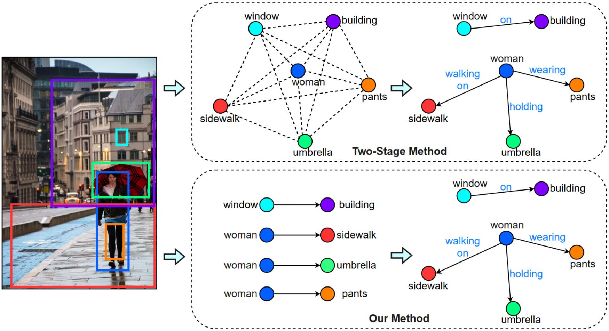
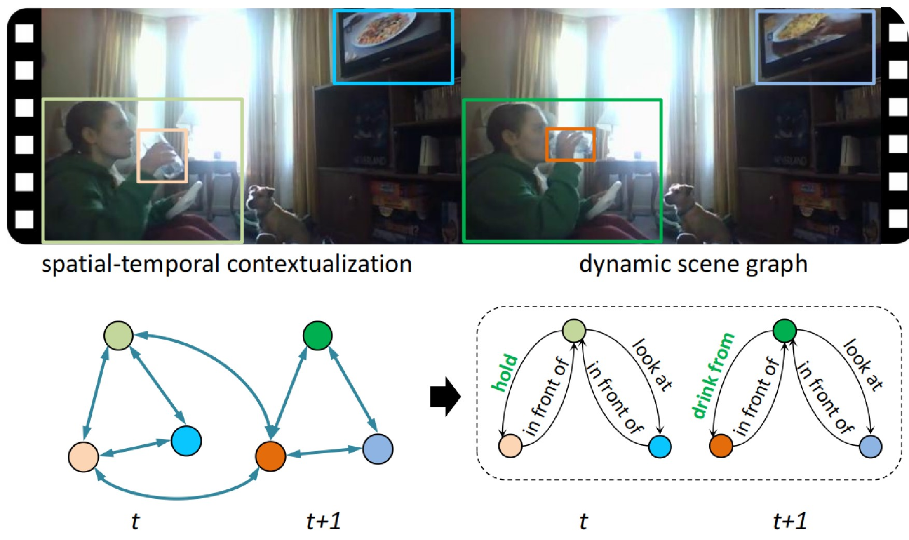
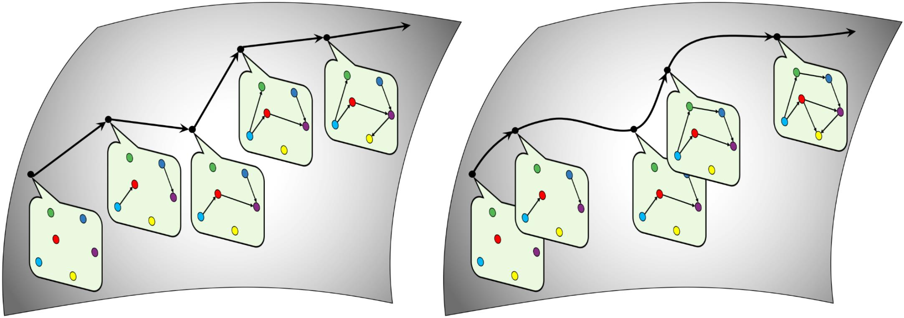
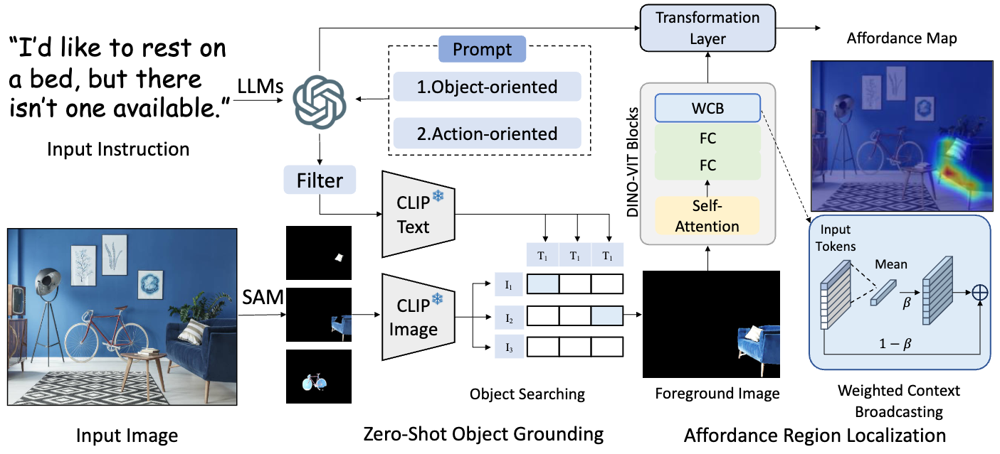

About
Research Scientist, Meta AI
Hello! I am a research scientist at Meta, building multi-modal understanding and generation models.
Previously I was a senior ML scientist at Picsart. I received my Ph.D. in Computer Science from Leibniz Hanover University, advised by Prof. Michael Yang and Prof. Bodo Rosenhahn.
News
- We release TUNA, A multimodal understanding and generation model!
- Our GenAI solution for Ads is highlighted at Cannes Lions 2025.
- Paper on compositional image generation accepted to IJCV.
- Paper on virtual try-on accepted to CVPR.
Selected Publications
Generative Models
- 
-

Mixture of States: Routing Token-Level Dynamics for Multimodal Generation
-

-
 Attribute-Centric Compositional Text-to-Image Generation
Attribute-Centric Compositional Text-to-Image Generation -

Learning Flow Fields in Attention for Controllable Person Image Generation
-

-

Scene Understanding
-
 SPAN: Learning Similarity between Scene Graphs and Images with Transformers
SPAN: Learning Similarity between Scene Graphs and Images with Transformers - 
- 
- 
Embodied AI
-
 Indoor Scene Change Understanding (SCU): Segment, Describe, and Revert Any Change
Indoor Scene Change Understanding (SCU): Segment, Describe, and Revert Any Change -

Worldafford: Affordance Grounding Based on Natural Language Instructions
Contact
- Email: congyuren@hotmail.com
- Wechat: congyr5